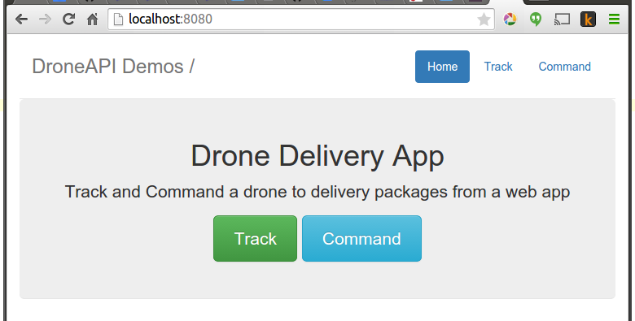
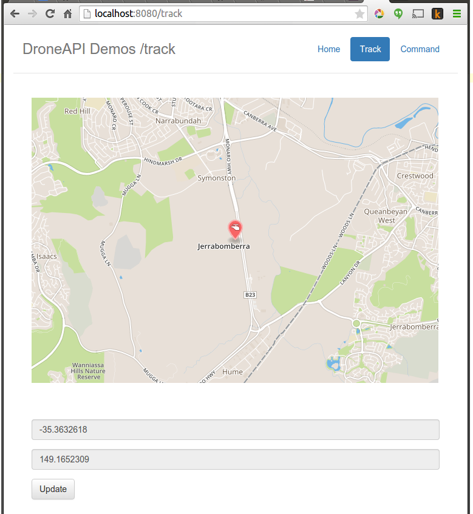
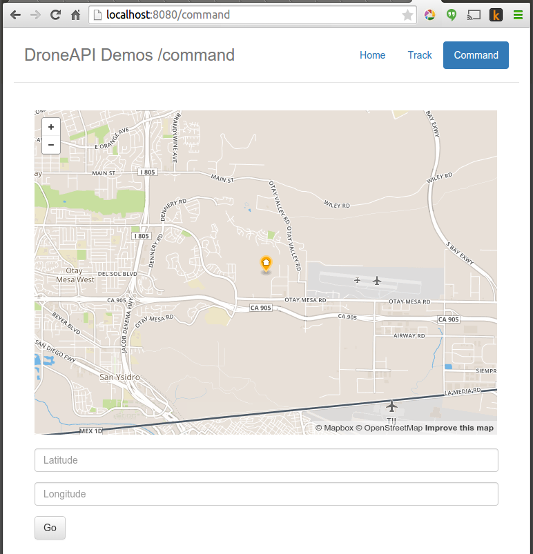

This example shows how to create a CherryPy based web application that displays a mapbox map to let you view the current vehicle position and send the vehicle commands to fly to a particular latitude and longitude.
New functionality demonstrated by this example includes:
The example can be run much as described in Running the Examples (which in turn assumes that the vehicle and DroneKit have been set up as described in Installing DroneKit). The main exception is that you need to install the CherryPy dependencies and view the behaviour in a web browser.
In summary, after cloning the repository:
Navigate to the example folder as shown:
cd dronekit-python\examples\drone_delivery\
Install CherryPy and any other dependencies from requirements.pip in that directory:
pip install -r requirements.pip
You can run the example against the simulator by specifying the Python script without any arguments. The example will download and start DroneKit-SITL, and then connect to it:
python drone_delivery.py
On the command prompt you should see (something like):
>python drone_delivery.py
D:\Github\dronekit-python\examples\drone_delivery>drone_delivery.py
Starting copter simulator (SITL)
SITL already Downloaded.
local path: D:\Github\dronekit-python\examples\drone_delivery
Connecting to vehicle on: tcp:127.0.0.1:5760
>>> APM:Copter V3.3 (d6053245)
>>> Frame: QUAD
>>> Calibrating barometer
>>> Initialising APM...
>>> barometer calibration complete
>>> GROUND START
Launching Drone...
[DEBUG]: Connected to vehicle.
[DEBUG]: DroneDelivery Start
[DEBUG]: Waiting for location...
[DEBUG]: Waiting for ability to arm...
[DEBUG]: Running initial boot sequence
[DEBUG]: Changing to mode: GUIDED
[DEBUG]: ... polled mode: GUIDED
[DEBUG]: Waiting for arming...
>>> ARMING MOTORS
>>> GROUND START
>>> Initialising APM...
[DEBUG]: Taking off
http://localhost:8080/
Waiting for cherrypy engine...
You can run the example against a specific connection (simulated or otherwise) by passing the connection string for your vehicle in the --connect parameter.
For example, to connect to Solo:
python drone_delivery.py --connect udpin:0.0.0.0:14550
After a short while you should be able to reach your new webserver at http://localhost:8080. Navigate to the Command screen, select a target on the map, then select Go. The command prompt will show something like the message below.
[DEBUG]: Goto: [u'-35.4', u'149.2'], 29.98
The web server will switch you to the Track screen. You can view the vehicle progress by pressing the Update button.
The webserver (http://localhost:8080) will look like the following:
  All attributes in DroneKit can have observers - this is the primary mechanism you should use to be notified of changes in vehicle state. For instance, drone_delivery.py calls:
self.vehicle.add_attribute_listener('location', self.location_callback)
...
def location_callback(self, vehicle, name, location):
if location.global_relative_frame.alt is not None:
self.altitude = location.global_relative_frame.alt
self.current_location = location.global_relative_frame
This results in DroneKit calling our location_callback method any time the location attribute gets changed.
Tip
It is also possible (and often more elegant) to add listeners using a decorator
- see Vehicle.on_attribute.
This example has the following issues:
The full source code at documentation build-time is listed below (current version on github):
#!/usr/bin/env python
# -*- coding: utf-8 -*-
"""
© Copyright 2015-2016, 3D Robotics.
drone_delivery.py:
A CherryPy based web application that displays a mapbox map to let you view the current vehicle position and send the vehicle commands to fly to a particular latitude and longitude.
Full documentation is provided at http://python.dronekit.io/examples/drone_delivery.html
"""
from __future__ import print_function
import os
import simplejson
import time
from dronekit import connect, VehicleMode, LocationGlobal, LocationGlobalRelative
import cherrypy
from jinja2 import Environment, FileSystemLoader
# Set up option parsing to get connection string
import argparse
parser = argparse.ArgumentParser(description='Creates a CherryPy based web application that displays a mapbox map to let you view the current vehicle position and send the vehicle commands to fly to a particular latitude and longitude. Will start and connect to SITL if no connection string specified.')
parser.add_argument('--connect',
help="vehicle connection target string. If not specified, SITL is automatically started and used.")
args = parser.parse_args()
connection_string = args.connect
# Start SITL if no connection string specified
if not connection_string:
import dronekit_sitl
sitl = dronekit_sitl.start_default()
connection_string = sitl.connection_string()
local_path = os.path.dirname(os.path.abspath(__file__))
print("local path: %s" % local_path)
cherrypy_conf = {
'/': {
'tools.sessions.on': True,
'tools.staticdir.root': local_path
},
'/static': {
'tools.staticdir.on': True,
'tools.staticdir.dir': './html/assets'
}
}
class Drone(object):
def __init__(self, server_enabled=True):
self.gps_lock = False
self.altitude = 30.0
# Connect to the Vehicle
self._log('Connected to vehicle.')
self.vehicle = vehicle
self.commands = self.vehicle.commands
self.current_coords = []
self.webserver_enabled = server_enabled
self._log("DroneDelivery Start")
# Register observers
self.vehicle.add_attribute_listener('location', self.location_callback)
def launch(self):
self._log("Waiting for location...")
while self.vehicle.location.global_frame.lat == 0:
time.sleep(0.1)
self.home_coords = [self.vehicle.location.global_frame.lat,
self.vehicle.location.global_frame.lon]
self._log("Waiting for ability to arm...")
while not self.vehicle.is_armable:
time.sleep(.1)
self._log('Running initial boot sequence')
self.change_mode('GUIDED')
self.arm()
self.takeoff()
if self.webserver_enabled is True:
self._run_server()
def takeoff(self):
self._log("Taking off")
self.vehicle.simple_takeoff(30.0)
def arm(self, value=True):
if value:
self._log('Waiting for arming...')
self.vehicle.armed = True
while not self.vehicle.armed:
time.sleep(.1)
else:
self._log("Disarming!")
self.vehicle.armed = False
def _run_server(self):
# Start web server if enabled
cherrypy.tree.mount(DroneDelivery(self), '/', config=cherrypy_conf)
cherrypy.config.update({'server.socket_port': 8080,
'server.socket_host': '0.0.0.0',
'log.screen': None})
print('''Server is bound on all addresses, port 8080
You may connect to it using your web broser using a URL looking like this:
http://localhost:8080/
''')
cherrypy.engine.start()
def change_mode(self, mode):
self._log("Changing to mode: {0}".format(mode))
self.vehicle.mode = VehicleMode(mode)
while self.vehicle.mode.name != mode:
self._log(' ... polled mode: {0}'.format(mode))
time.sleep(1)
def goto(self, location, relative=None):
self._log("Goto: {0}, {1}".format(location, self.altitude))
if relative:
self.vehicle.simple_goto(
LocationGlobalRelative(
float(location[0]), float(location[1]),
float(self.altitude)
)
)
else:
self.vehicle.simple_goto(
LocationGlobal(
float(location[0]), float(location[1]),
float(self.altitude)
)
)
self.vehicle.flush()
def get_location(self):
return [self.current_location.lat, self.current_location.lon]
def location_callback(self, vehicle, name, location):
if location.global_relative_frame.alt is not None:
self.altitude = location.global_relative_frame.alt
self.current_location = location.global_relative_frame
def _log(self, message):
print("[DEBUG]: {0}".format(message))
class Templates:
def __init__(self, home_coords):
self.home_coords = home_coords
self.options = self.get_options()
self.environment = Environment(loader=FileSystemLoader(local_path + '/html'))
def get_options(self):
return {'width': 670,
'height': 470,
'zoom': 13,
'format': 'png',
'access_token': 'pk.eyJ1Ijoia2V2aW4zZHIiLCJhIjoiY2lrOGoxN2s2MDJzYnR6a3drbTYwdGxmMiJ9.bv5u7QgmcJd6dZfLDGoykw',
'mapid': 'kevin3dr.n56ffjoo',
'home_coords': self.home_coords,
'menu': [{'name': 'Home', 'location': '/'},
{'name': 'Track', 'location': '/track'},
{'name': 'Command', 'location': '/command'}],
'current_url': '/',
'json': ''
}
def index(self):
self.options = self.get_options()
self.options['current_url'] = '/'
return self.get_template('index')
def track(self, current_coords):
self.options = self.get_options()
self.options['current_url'] = '/track'
self.options['current_coords'] = current_coords
self.options['json'] = simplejson.dumps(self.options)
return self.get_template('track')
def command(self, current_coords):
self.options = self.get_options()
self.options['current_url'] = '/command'
self.options['current_coords'] = current_coords
return self.get_template('command')
def get_template(self, file_name):
template = self.environment.get_template(file_name + '.html')
return template.render(options=self.options)
class DroneDelivery(object):
def __init__(self, drone):
self.drone = drone
self.templates = Templates(self.drone.home_coords)
@cherrypy.expose
def index(self):
return self.templates.index()
@cherrypy.expose
def command(self):
return self.templates.command(self.drone.get_location())
@cherrypy.expose
@cherrypy.tools.json_out()
def vehicle(self):
return dict(position=self.drone.get_location())
@cherrypy.expose
def track(self, lat=None, lon=None):
# Process POST request from Command
# Sending MAVLink packet with goto instructions
if(lat is not None and lon is not None):
self.drone.goto([lat, lon], True)
return self.templates.track(self.drone.get_location())
# Connect to the Vehicle
print('Connecting to vehicle on: %s' % connection_string)
vehicle = connect(connection_string, wait_ready=True)
print('Launching Drone...')
Drone().launch()
print('Waiting for cherrypy engine...')
cherrypy.engine.block()
if not args.connect:
# Shut down simulator if it was started.
sitl.stop()